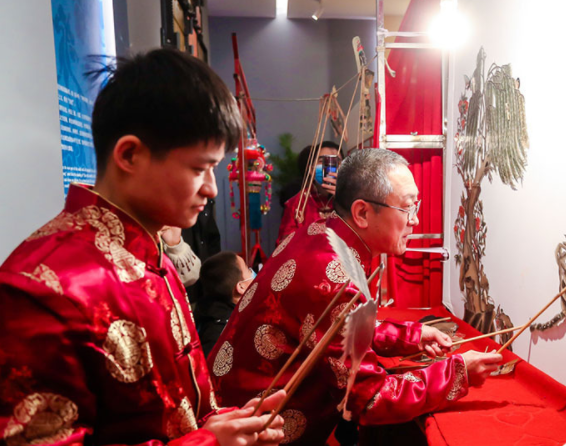

回到资讯孝义皮影戏在西安耀眼亮相
12月5日，“2020西安城墙非遗文化传承”活动，在拥有1400余年历史文化的西安唐皇城墙含光门遗址博物馆开幕。当日，孝义市皮影戏第八代传承人、山西省非遗传承人、孝义市皮影木偶艺术研究会会长侯建川，为现场专家和八方来客以及市民游客，展示了孝义国家级非物质文化遗产孝义皮影戏 “一口道尽千古事，双手对舞百万兵”的皮影文化魅力。
孝义皮影木偶剧团的演职人员表演了《锅庄》《变脸》《长绸舞》《女驸马》，讲解+互动提现、卡通木偶《县太爷》《手绢佛珠》，皮影《收五毒》和非遗皮影DIY,孝义皮影戏，唱腔音乐丰富，地方特色浓厚，绘画、雕刻精致，表演生动逼真，是一门古老的汉族传统艺术，具有很高的历史价值、教育价值和艺术价值。据专家考证，孝义皮影起于战国，是中国最早的皮影发源地之一，也是中国皮影戏的重要支派之一，2006年被列入首批国家级非物质文化遗产保护名录。
据悉，此次“2020西安城墙非遗文化传承”活动，由来自全国各地的刺绣、花灯、皮影、剪纸、布糊画、木版年画六项非物质文化遗产项目构成“非遗文化艺术回廊”。通过两天时间的展示表演，尽显地域文化特色与风采。本次活动参展的花灯与皮影两大非遗项目，将于2021年2月4日以更加瞩目的方式亮相第34届西安城墙新春灯会，向全国各地的市民游客送上新春祝福。本次孝义皮影戏让来自全国各地的游客体验了非遗皮影戏技艺，感受非遗文化的独特魅力，让更多人爱上孝义皮影，让孝义皮影戏能走得更久更远。
发展简史：
- 战国/宋金
孝义皮影起源于战国，是中国最早的皮影发源地之一。

- 明清
明清时为孝义皮影的鼎盛期，孝义境内皮影班社多达60多家，随后逐渐衰落。
-
- 1950年
1956年成立孝义市木偶皮影艺术团，"文革"时期撤消。
-
- 1978年
1978年恢复皮影戏演出，曾参加首届中国艺术节演出，赴英国交流访问演出。
-
- 1995年
1995年，孝义皮影中的武将形象作为邮票图案被全国人民认识。
-
- 至今
孝义皮影剧目丰富，现收藏有200余本，这些剧本题材广泛，内容丰富，极具学术价值。